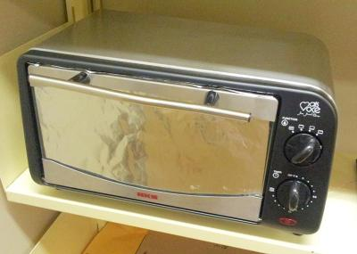

Os projetos em andamento atualmente são os seguintes:
O forno de refluxo é utilizado para solda de dispositivos SMD em placas de circuito eletrônico. O forno proposto foi construído a partir de uma forno elétrico convencional de 800W, comumente utilizado na preparação de alimentos.
Além do forno propriamente dito, foi desenvolvido um controlador on-off, também conhecido como big-bang. O controlador foi implementado com um microcontrolador dotado de termopar tipo K e um circuito condicionador de sinal. O controlador assegura que a temperatura no interior do forno siga um perfil necessário para solda.